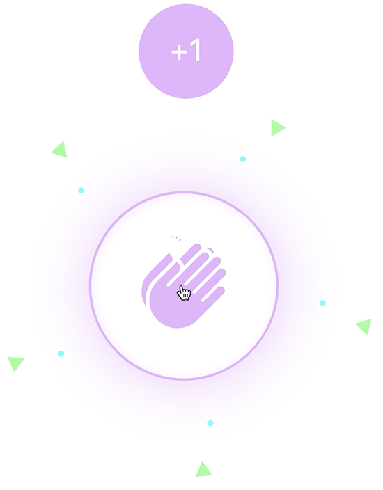
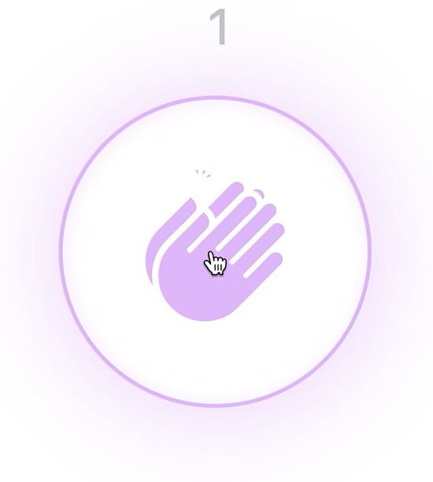
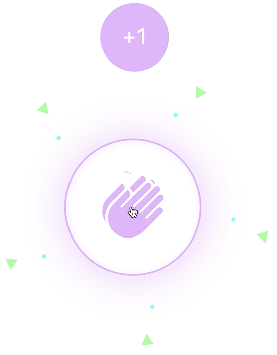
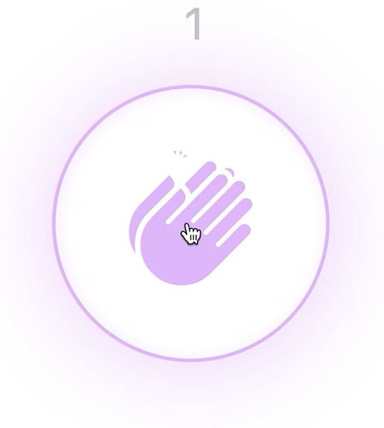

Clapping for a Medium
By Devin Taylor, Interactive Digital Media Student at Drexel University
The Overview
It's the little things that turn a good digital product into a great one. We encounter microinteractions many times a day without even realizing it. They're what gives us the incredible digital experience we know and love. The project for this course, Microinteractions, challenged students to use the coding knowledge acquired in previous courses to improve the user experience of an existing microinteraction by modifying or adding code.
I chose to work with the Medium Clap interaction. "Claps" are Medium's chosen metric to measure reader support of an article. There was great room for development within the coding and design process, which allowed me to create an end product that I am proud of. This project encouraged me to turn my ideas into a reality through the processes of code research and implementation.
Context and Challenge
Background / Timeline / Purpose
Students in the Interactive Digital Media program at Drexel University have been taught the fundamental foundations of primary scripting languages prior to taking this course. In IDM-241, students learned to identify and design meaningful microinteractions through proper usage of their acquired front-end scripting languages. In regards to Drexel's quarter system, the complete time period students had to complete this project was nine weeks. Assignments were broken up into three main parts: Alpha, Beta, and Final. Students were given two weeks for Alpha description and development, two weeks for Beta description and development, and the remaining weeks for final descriptions and completing final builds. The purpose of this project was for students to expand upon an existing microinteraction while utilizing their existing knowledge of primary scripting languages, and perhaps exploring and implementing new knowledge along the way.
The Problem
There are millions of existing microinteractions we come across in our daily lives. Many of which, could be improved for a better user experience. This project exists to solve the mediocre experience we encounter when interacting with these features. The difference between a product you love and a product you tolerate is often the microinteraction it contains. This class has provided students with the opportunity to turn a tolerated microinteraction into one that a user loves to come across.
Goals & Objectives
The metrics that define if this project is successful are the reflections of the Triggers, Rules, Feedback, Loops & Modes specified in the description for each given assignment. If they reflect correctly, then the project demonstrates a successful build. For my individual project, enhancing the experience of Clapping for a Medium, the tangible goals include sights that occur on a hover and click. These sights include a shockwave effect, color fill, a bubble which counts the individual contributed number of claps, numerical text containing the overall number of claps contributed, and colorful confetti bursting from the microinteraction.
This was a solo project where each student in the class chose their own microinteraction to work with. The goal of this project was to work with the existing code that made up the microinteraction, tweaking it to enhance the overall user experience. The point was not to write new code from scratch, but to research in order to find the answers to problems we aimed to solve within our designs. We were then able to implement the resources we found through research into existing code and deliver assets based on the Alpha, Beta, and Final assignment requirements.
Process and Insight
Many elements influenced the developments throughout my design process. When we were first assigned this project, I knew I wanted to work with the Medium Clap because I had used it before and loved the idea of it. There was something so rewarding as a user upon clicking the Clap button. Besides knowing that what I was contributing was benefitting the author, the microinteraction was so engaging that you wanted to keep clicking, again and again. When I decided to take this interaction into the design process, I first thought about the target audience.
After doing research, I found that 95% of Medium's readers are college graduates. These readers are also young, with half of them in the coveted 18-34 age demographic and 70% of them being under the age of 50. This information played a large role in guiding me to make my design decisions.
I then took myself, a college age student who fell in the same age demographic, through the user journey of Clapping for a Medium. The original experience was nice, but I saw room for improvement. For instance, colors were dark and muted. There was too much gray. I also felt that 50 claps was a lot of clicks for users. Since that is a large contribution, it made each clap feel less valued. So I wanted to change that.
I chose to use Medium's fonts in each of my builds to keep the brand consistent. However, my preference on color changed towards the end of my final build. I felt that all pink was not as inclusive as I wanted my design to be. But I still wanted bright, happy colors to let the user know what they were doing was good, even if it was on a subconscious psychological level.
Here are some lines of code that guided my build from Alpha to Final:

Here are some images that capture the stages I encountered throughout this project:
The Solution
I tailored the code for this product to deliver a user-friendly microinteraction that Medium readers would feel good about clicking. Whether it was a color choice, the contribution number limit, or the speed which the confetti bursts, each design decision was thoroughly thought out and tested to create the best possible redesign for a Medium Clap. Feel free to visit my website and try it for yourself!
 
 View my final product in your browser here!
View the code for this project here!
Results
I believe that this completed project turned out successful. For me, this project is not only successful for redesigning a major feature of a massive online publishing platform, but about learning lessons along the way. A key lesson I am taking away from this project that I hope to bring into future projects, is to not bite off more than you can chew in the beginning. I was thinking of transforming the Medium Clap into this super complex microinteraction during the first week or so, when I was reminded by my professor, Jervis Thompson, that not everything in the design and tech world has to be completely recreated. Some of the greatest things in the digital world come from a combination of existing ideas and resources that have been altered to one's preference and ability. And though I understood the fundamentals of the primary scripting languages used in this project, I have a stronger appreciation for the powerful language that code is - allowing anyone, anywhere, to create something they are passionate about.